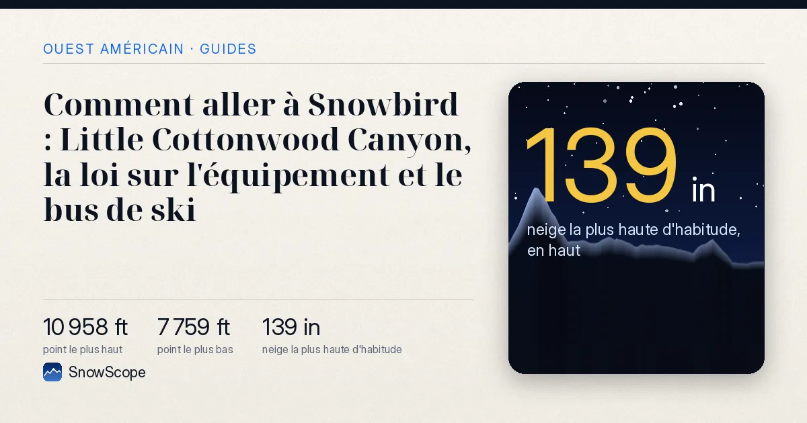
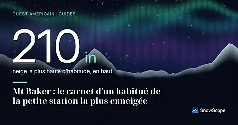
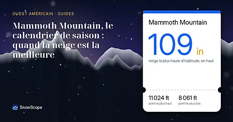

Comment aller à Snowbird : Little Cottonwood Canyon, la loi sur l'équipement et le bus de ski
Snowbird est isolé au sommet de Little Cottonwood Canyon (SR-210), qu'il partage avec Alta. L'unique route du canyon est rapide par beau temps et lente lors des tempêtes, donc vos pneus, l'heure de départ et les prévisions météo façonnent votre trajet bien plus que la distance.
Consultez les prévisions neige en temps réel pour Snowbird sur l'application SnowScopeHauteurs de neige, alertes poudreuse et carte 3D, gratuitement.

Où se trouve Snowbird
Snowbird se situe à environ 29 miles (47 km) au sud-est de l'aéroport international de Salt Lake City et 24 miles (39 km) du centre-ville. L'entrée du canyon commence près de Sandy, 4 miles (6 km) à l'ouest. Une fois engagé dans le canyon sur la SR-210, il n'existe qu'un seul itinéraire d'entrée et de sortie, aussi l'UDOT avertit les automobilistes que la route est sans issue en hiver. Apportez des provisions et du carburant pour la journée si vous conduisez.
La montée du canyon, de son entrée à la station, est raide : environ 1 600 ft (488 m) sur ces derniers miles. Le temps de trajet dépend de la météo et du trafic, pas uniquement de la distance.

La loi de traction : quand elle s'applique et quels pneus vous avez besoin
Quand les balises clignotantes de l'UDOT sont actives aux entrées du canyon, la loi de traction prend effet sur la SR-210 et la SR-190. L'UDOT peut l'appliquer jusqu'à 24 heures avant l'arrivée d'une tempête. Tous les pneus doivent avoir au minimum 5/32 inch (4 mm) de profondeur.
Si votre voiture a une traction intégrale ou quatre-roues motrices, vous avez besoin de pneus hiver (marquage M+S) sur les quatre roues. Si elle a une traction avant ou arrière, vous devez installer des pneus neige (symbole 3PMSF) sur les quatre roues, ou porter des chaînes ou chaussettes à neige pour les deux roues motrices. Les voitures de location de Salt Lake City viennent souvent avec des pneus toutes saisons : vérifiez le marquage avant de réserver, ou choisissez le bus à la place.
Oubliez la voiture : la ligne UTA 994 et les bus du Canyon Service
La ligne UTA 994 et le Canyon Service proposent des bus directs jusqu'à Snowbird et Alta dans Little Cottonwood Canyon. L'horaire du bus des pistes fonctionne généralement de début décembre à mi-avril. Si les stations ouvrent tôt dans la saison, l'UTA peut démarrer les bus plus tôt. Utilisez l'application Transit ou visitez le site web de l'UTA pour vérifier l'horaire avant de partir.
Un jour de poudreuse chargée, le bus résout deux problèmes à la fois : vous évitez la queue au parking et vous échappez au stress d'une montée en solo dans le trafic d'orage. Le bus part de la gare du centre-ville de Salt Lake City et de l'aéroport.
Avant de partir : vérifiez l'état des routes
L'UDOT publie un flux de statut en direct pour la SR-190 et la SR-210 qui liste les fermetures, les règles de traction et les liens vers les caméras de route. Si aucune alerte n'apparaît, les routes sont ouvertes sans restrictions prévues. Vérifiez le flux avant de quitter Salt Lake City, et vérifiez-le à nouveau avant de redescendre en fin d'après-midi.
L'unique route du canyon se remplit rapidement lors de fortes chutes de neige. Partir tôt un jour de tempête n'est pas que pour le confort : c'est pour ne pas être bloqué ou retardé pendant des heures.
Pourquoi le canyon mérite l'effort
La récompense pour monter ou prendre le bus dans Little Cottonwood Canyon, c'est la profondeur. À mi-montagne, environ 9 357 ft (2 852 m), la profondeur maximale typique de neige au cours des hivers passés était 96 in (244 cm). La base se situe plus bas, à 7 760 ft (2 365 m), où le pic typique était 52 in (133 cm). La neige reste au sol environ 220 jours chaque hiver à mi-montagne, généralement la plus profonde en mars.
L'hiver dernier (2025-26) a été sec : le pic à mi-montagne n'a atteint que 56 in (143 cm). Mais un hiver normal, le canyon capture les tempêtes du Pacifique et garde la neige élevée. Le gain d'altitude lors de la montée compte—les pentes supérieures à 10 961 ft (3 340 m) connaissent un pic typique de 139 in (352 cm).
Conseils aux skieurs
- Consultez le flux de statut UDOT Cottonwood Canyons sur votre téléphone avant de monter et avant de descendre. Un flux en direct vaut mieux qu'une prévision.
- Les pneus comptent plus que la traction intégrale. Une traction avant avec pneus hiver vaut mieux que la traction intégrale avec pneus toutes saisons quand les lois de traction s'appliquent.
- Un matin de poudreuse ou lors de fortes chutes, prenez le bus. Vous arriverez plus serein, vous garerez plus facile et aiderez la route du canyon à avancer plus vite.
- Quittez la vallée tôt un jour de tempête. L'unique route du canyon devient lente dans l'heure suivant de fortes chutes de neige.
- Si vous allez en arrière-pays depuis le canyon, consultez d'abord le bulletin de l'Utah Avalanche Center.
À propos de ces chiffres
Les hauteurs de neige des stations sont la neige la plus épaisse sur le haut du domaine à la date indiquée ; ce sont des estimations pour une zone, pas une mesure en un point. Les prévisions peuvent changer. Consultez toujours le bulletin d'avalanche officiel avant le hors-piste.
Bulletins d'avalanche officiels: Utah Avalanche Center
Citer ce bulletin
Pour la recherche, l'enseignement ou la presse : chiffres et graphiques réutilisables librement sous CC BY 4.0 avec cette citation.
SnowScope (2026), Comment aller à Snowbird : Little Cottonwood Canyon, la loi sur l'équipement et le bus de ski, https://snowscope.app/blog/fr/2026/11/how-to-get-to-snowbird-little-cottonwood-canyon.html, consulté le 2026-11-09
SnowScope (Atlas Labs). (2026, November 9). Comment aller à Snowbird : Little Cottonwood Canyon, la loi sur l'équipement et le bus de ski. SnowScope snow reports. https://snowscope.app/blog/fr/2026/11/how-to-get-to-snowbird-little-cottonwood-canyon.html
BibTeX
@misc{snowscope2026howtogettosnowbirdlittle,
author = {{SnowScope (Atlas Labs)}},
title = {Comment aller à Snowbird : Little Cottonwood Canyon, la loi sur l'équipement et le bus de ski},
year = {2026},
month = nov,
howpublished = {\url{https://snowscope.app/blog/fr/2026/11/how-to-get-to-snowbird-little-cottonwood-canyon.html}},
note = {Published 2026-11-09 18:47 UTC; accessed 2026-11-09}
}· CC BY 4.0 · Méthodes, données et outils →
Snowbird : neige et température selon l'altitude, cet hiver vs l'hiver dernier (outils) →
Suivre Snowbird
Gratuit : un message quand la neige arrive, et la météo chaque matin.
Autres bulletins neige

Comment passer un premier jour à Park City Mountain, Utah, et quand y aller : notre historique donne environ 71 in (180 cm) au pic habituel à mi-pente sur 46 hivers passés.

Mt Baker, État de Washington : environ 133 in (337 cm) au pic habituel à mi-pente sur 46 hivers passés, un record mondial de neige, aucun hébergement sur place.

Préparez Mammoth Mountain selon la saison : environ 93 in (235 cm) au pic habituel à mi-pente sur 46 hivers passés, mars le plus enneigé, longs printemps, hivers variables.